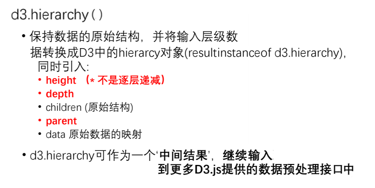
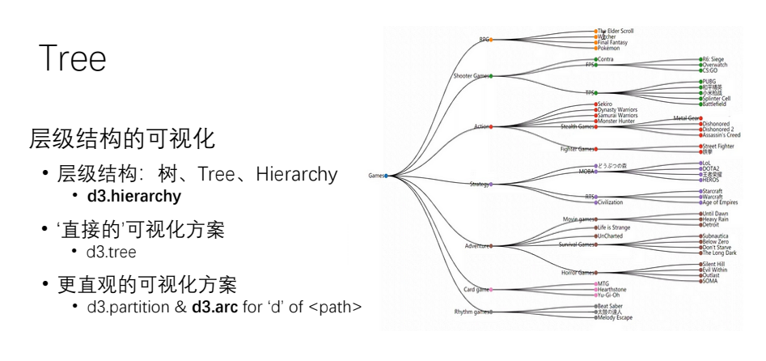

D3js - Tree 树 实例
D3js 官网、
D3js 画廊、
D3js 指南、
D3js 文档、
SVG 文档、
SVG 手册、
- 根据指定的层次结构数据构造一个根节点，指定的数据 data 必须为一个表示根节点的对象。

- 对指定的 root hierarchy 进行布局，并为 root 以及它的每一个后代附加x 和 y两个坐村属性。

- 生成从一个源点到目标点的光滑的三次贝塞尔曲线，曲线在起点和终点的切线要么是 垂直vertical，要么是 水平horizontal，要么是 径向radial的。